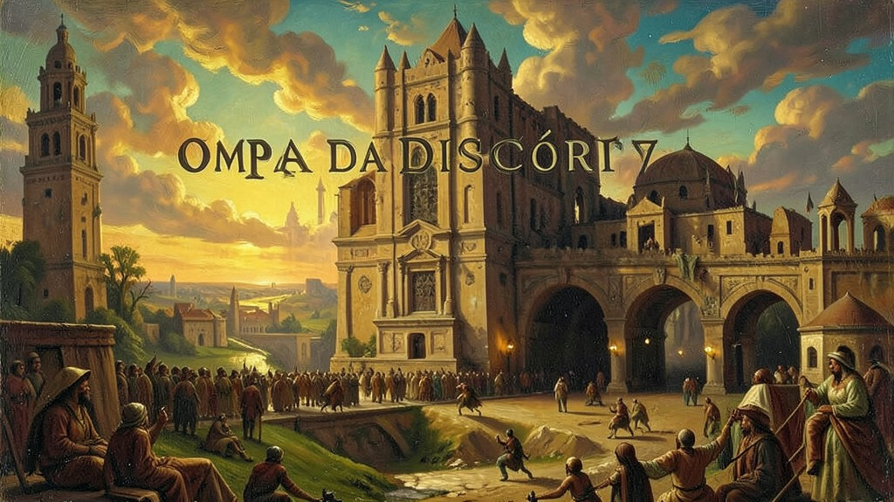
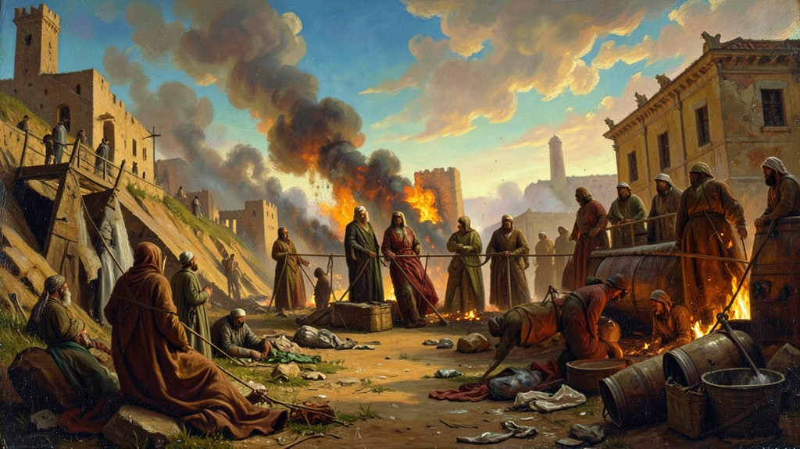

"A disputa por um pedaço pequeno de terra sagrada gerou o conflito mais longo da era moderna. No centro da questão, estão dois povos que clamam pelo direito de ter sua própria nação."
A fundação do conflito moderno no **Oriente Médio** remete ao final do século XIX com o movimento **Sionista**, que defendia a criação de um Estado judeu na Palestina (sua terra ancestral). Após o Holocausto na 2ª Guerra Mundial, a pressão internacional levou a ONU a aprovar, em 1947, o Plano de Partilha da Palestina em dois Estados: um judeu e um árabe. Os judeus aceitaram e proclamaram o **Estado de Israel (1948)**, mas os países árabes vizinhos recusaram e atacaram imediatamente, iniciando a primeira de várias guerras. Em 1967, na **Guerra dos Seis Dias**, Israel desferiu um ataque mestre e ocupou a Faixa de Gaza, a Cisjordânia e Jerusalém Oriental — territórios que seriam a base do futuro Estado Palestino. Essa ocupação militar dura até hoje e é o cerne das tensões. Em 1973, a **Guerra do Yom Kippur** levou os países árabes a usarem o petróleo como arma política, gerando a crise econômica mundial da década de 70. Acordos de paz, como os de Oslo (1993), tentaram criar a Autoridade Nacional Palestina, mas o assassinato de líderes e a expansão de assentamentos israelenses, junto com a resistência do grupo Hamas, mantêm a região em um ciclo de violência e impasses diplomáticos. O ENEM costuma cobrar as causas históricas da partilha, os impactos econômicos (choques do petróleo) e as questões humanitárias envolvendo os refugiados palestinos.
1. Sionismo e a Herança da 2ª Guerra
Para os judeus dispersos pelo mundo (Diáspora), o retorno para a 'Terra de Israel' (Eretz Yisrael) era místico e político. Após o extermínio de 6 milhões de judeus pelos nazistas, o mundo sentiu-se moralmente obrigado a garantir um porto seguro para esse povo. A Palestina, sob mandato britânico, era o local escolhido, mas já era habitada há séculos por uma maioria árabe muçulmana e cristã.

2. ONU 1947: O Mapa da Discórdia
A ONU propôs dividir a terra: 55% para os judeus e 45% para os árabes. Jerusalém seria uma zona internacional neutra. Os árabes rejeitaram, pois consideravam injusto perderem suas terras ancestrais por uma decisão tomada pela Europa. No dia seguinte à independência de Israel, exércitos do Egito, Jordânia, Síria e Iraque invadiram a região. Israel venceu e expandiu seu território além do planejado pela ONU.

3. 1967: Os Seis Dias que Mudaram a Geografia
Sentindo um ataque iminente, Israel destruiu as forças aéreas árabes em poucas horas. Em seis dias, triplicou de tamanho, tomando as Colinas de Golã (Síria), o Sinai (Egito) e o controle total de Jerusalém. Desde então, a fronteira de 1967 é a base de todas as negociações de paz, exigindo que Israel se retire dessas áreas em troca de segurança permanente.

4. Choque do Petróleo e Crise Global
Em 1973, países árabes da OPEP (Organização dos Países Exportadores de Petróleo) quadruplicaram o preço do barril para punir os aliados de Israel. Isso causou uma inflação global assustadora e o fim do crescimento econômico acelerado em países como o Brasil, forçando o mundo a buscar energias alternativas e carros mais econômicos.
5. Acordos de Oslo e a Falência da Paz
Na década de 90, o líder palestino Yasser Arafat e o premiê israelense Yitzhak Rabin apertaram as mãos. Parecia o fim do conflito, com a promessa de criação de um Estado da Palestina em 5 anos. Mas o extremismo de ambos os lados venceu: Rabin foi assassinado por um judeu radical e os atentados suicidas palestinos aumentaram. Hoje, o muro construído por Israel e o bloqueio a Gaza mantêm a paz como um sonho distante.
TEXTO DE APOIO
A extrema convulsão e fragmentação política da região do Oriente Médio fundamenta-se nos traumas colossais da 'Balcanização' orquestrada pelos imperialistas britânicos e franceses nos Acordos Sykes-Picot (1916). Na partilha das carcaças do moribundo Império Otomano, fronteiras rectilíneas totalmente exógenas e artificiais apartaram milênios de dinâmicas laicais, sectárias-sunitas, xiitas ou étnicas, inserindo artificialmente os governos protetores das jazidas petrolíferas do chamado Novo Grande Jogo geopolítico.
O mais doloroso e nuclear destes distúrbios, como examinado criticamente por Edward Said, é o antagonismo territorial Israelo-Palestino estabelecido atavicamente após o Plano de Partilha pela Organização das Nações Unidas (ONU, 1947). O advento do projeto sionista culminando na instauração do forte Estado-Nacional Judeu em 1948 materializou para os palestinos árabes e o mundo pan-árabe a 'Nakba' (Catástrofe). Uma saga crônica pautada por êxodos geracionais incalculáveis e refúgios que inflamariam as vitórias isrealeses como a famigerada 'Guerra dos Seis Dias'.
Ao Enem, é indispensável relacionar as dinâmicas sociopolíticas do Oriente Médio não como reflexões isoladas e inexplicáveis de 'ódio extremista', mas atados estruturalmente à era do colonialismo ocidental, à política americana da Guerra Fria versus o Nasserismo Pan-Árabe e nas disputas pela matriz carbonífera. Além do embate Arábe-israelense, as divergências geopolíticas na Guerra Irã-Iraque e mais contemporaneamente, as ramificações violentas, ditatoriais e precarizantes para controle hegemônio regional são essenciais ao candidato crítico.
Mini Games
Arcade Histórico
Escolha um dos jogos abaixo para fixar o aprendizado deste módulo: